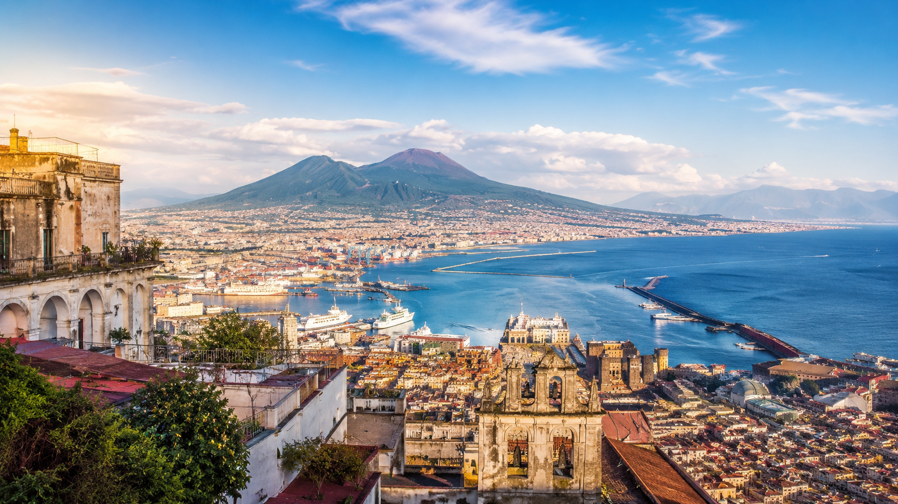
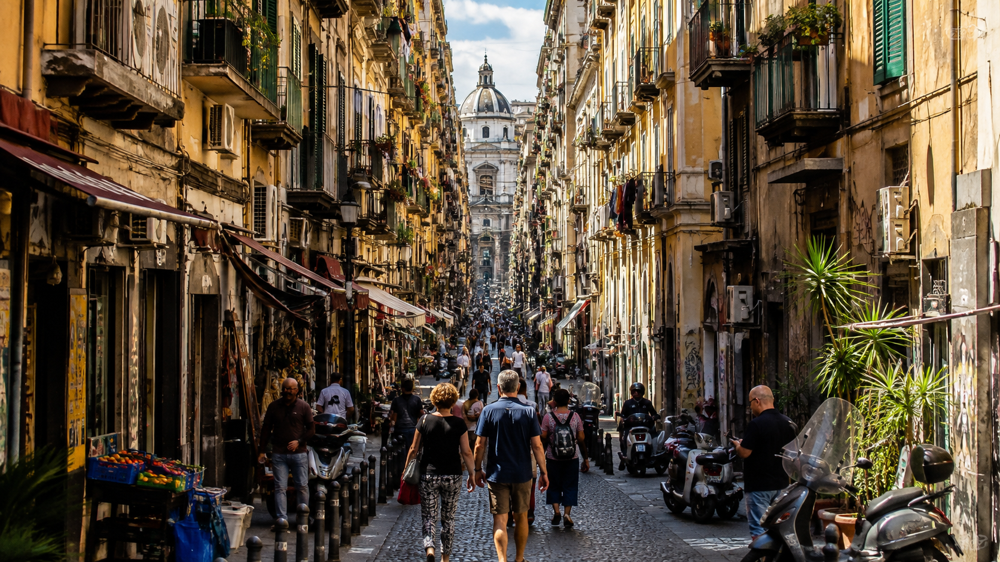
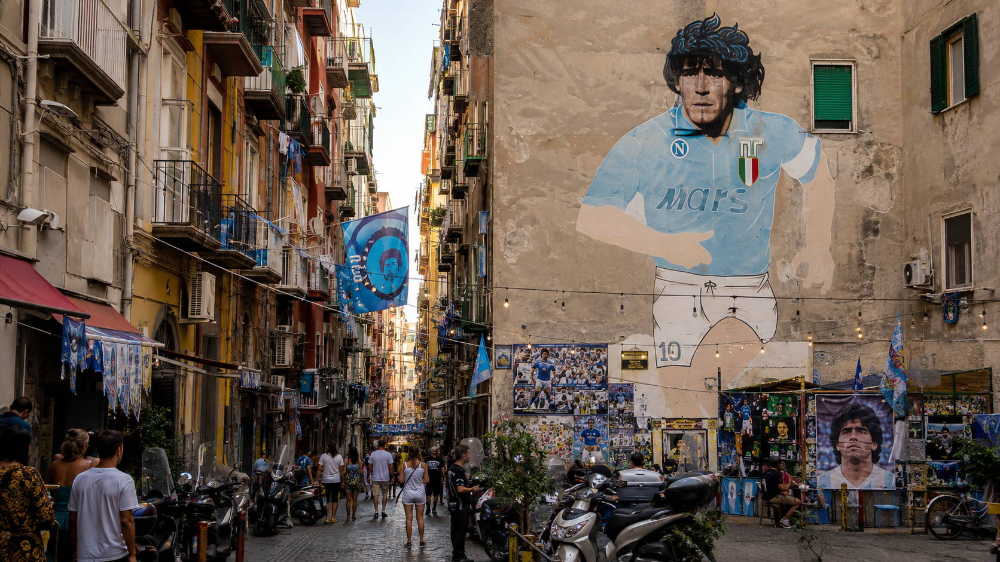
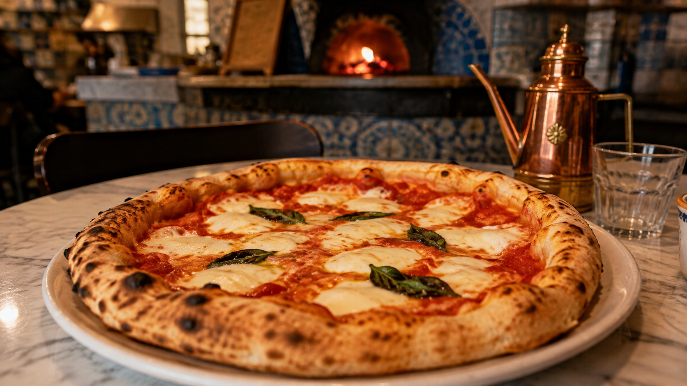
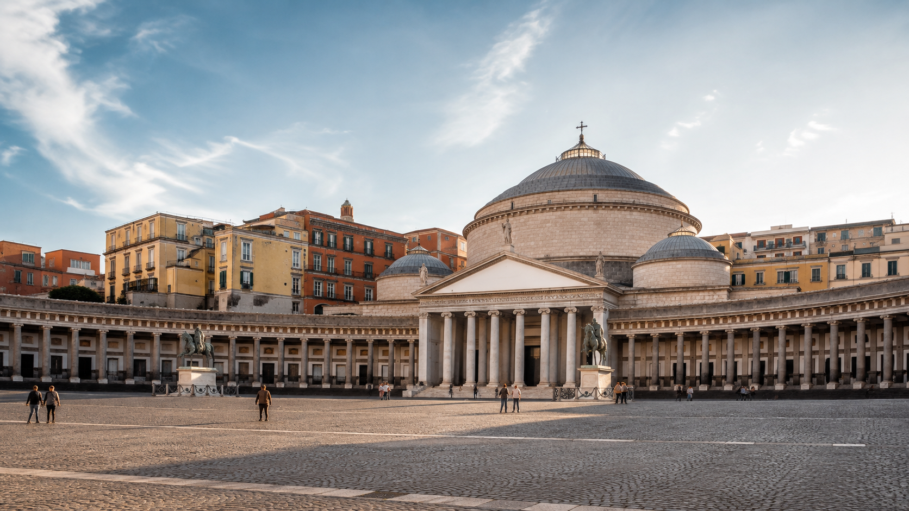
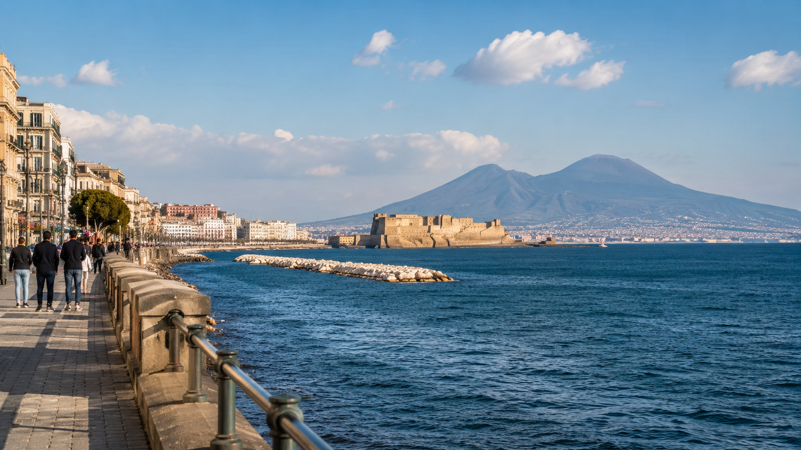
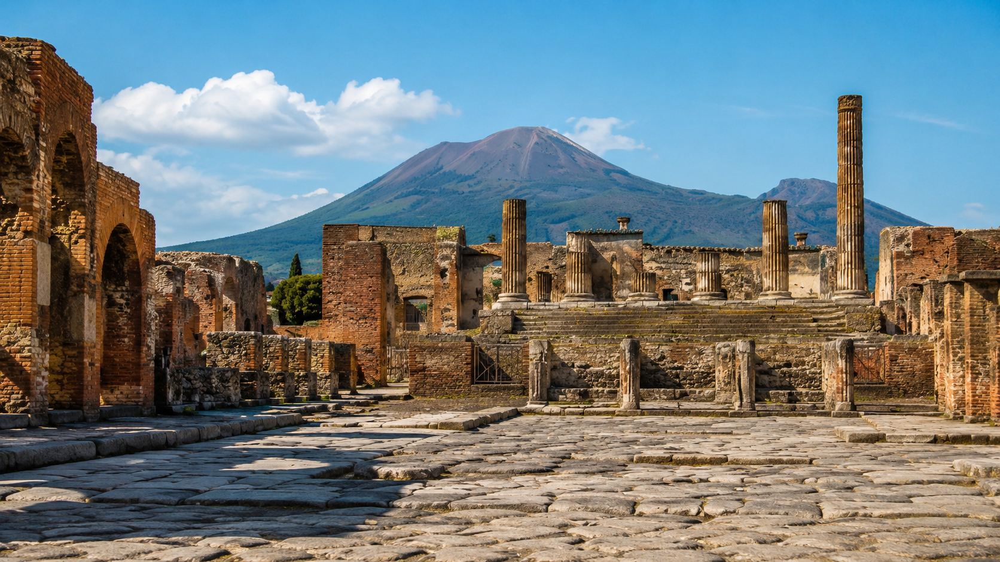
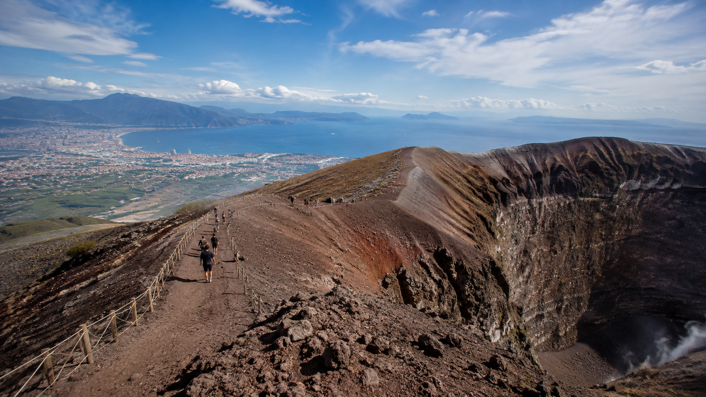

✈️ Stredomorská príležitosť v skratke
Bratislava → Neapol → Bratislava
Termín: 6. – 10. október 2026
Počet nocí: 4
Cena letu: od 44 € spiatočne / osoba
Priame lety: áno

Cesta tam
6. októbra
- Bratislava 14:25
- Neapol 16:05
- Wizz Air
- let približne 1 h 40 min.
Cesta späť
10. októbra
- Neapol 19:05
- Bratislava 20:55
- Ryanair
- let približne 1 h 50 min.
Časy sú na krátky výlet mimoriadne použiteľné. Do Neapola priletíte ešte popoludní a pri návrate máte k dispozícii prakticky celý posledný deň.
Cena bola skontrolovaná 24. 8. 2026 a môže sa kedykoľvek zmeniť.
Pozor na batožinu
Najnižšia cena počíta s cestovaním naľahko. Wizz Air aj Ryanair aktuálne povoľujú v základnej cene jeden malý kus batožiny s maximálnymi rozmermi 40 × 30 × 20 cm, ktorý musí vojsť pod sedadlo. Väčšia kabínová batožina je už platená.
Na štyri noci sa to dá zvládnuť, ale práve batožina je jedna z vecí, ktoré treba pri porovnávaní konečnej ceny zohľadniť.
🛏️ Kde sa ubytovať
Pôvodná ponuka počítala iba s dvoma nocami. Pri novom termíne 6.–10. októbra som preto ubytovania preveril znova pre dve osoby a štyri noci.
Frebi’s Home – Bed & Breakfast
384 € / 2 osoby / 4 noci
teda približne 192 € na osobu
Aktuálne hodnotenie na Booking.com: 9,1/10.
Veľkou výhodou je poloha pri oblasti hlavnej stanice Napoli Centrale/Piazza Garibaldi. Nie je to najkrajšia časť mesta, ale pre takýto výlet je mimoriadne praktická – prichádza sem autobus z letiska a odtiaľ sa dobre vyráža smerom k Pompejám a Vezuvu.
Partenope Guest House
548 € / 2 osoby / 4 noci
teda približne 274 € na osobu
Aktuálne hodnotenie na Booking.com: 8,8/10.
Jeho poloha je atraktívnejšia pre samotné objavovanie centra Neapola, ale rozdiel oproti Frebi’s Home je pri štyroch nociach približne 164 € za izbu.
Ktoré by som vybral?
Pri tomto type výletu Frebi’s Home.
Nie preto, že by bolo lepšie vo všetkom, ale preto, že lepšie zapadá do myšlienky tejto Stredomorskej príležitosti: lacný let + rozumné ubytovanie + výborná dopravná poloha.
Pri rezervácii treba ešte raz skontrolovať konkrétnu ponuku s raňajkami, storno podmienky a prípadnú miestnu pobytovú daň. Ceny ubytovania sú dynamické rovnako ako ceny leteniek.
🌋 Čo by som z tejto cesty určite nevynechal
Neapol sa podľa mňa neoplatí poňať ako zoznam dvadsiatich pamiatok, ktoré treba za každú cenu stihnúť.
Práve naopak.
Je to mesto, pri ktorom je časť zážitku jednoducho byť v uliciach.
Historické centrum Neapola je od roku 1995 súčasťou svetového dedičstva UNESCO a zachovalo urbanistické vrstvy siahajúce od gréckych a rímskych čias až po neskoršie obdobia mesta.
1. Nevynechať samotný neapolský chaos

Ak by ste si z Neapola mali odniesť iba jednu vec, nemala by to byť fotografia konkrétnej budovy.
Mala by to byť atmosféra mesta.
Úzke uličky, skútre, malé bary, prádlo zavesené medzi domami, ruch, vôňa jedla a život odohrávajúci sa priamo na ulici.
Na toto sú ideálne Spaccanapoli, Via dei Tribunali a predovšetkým Quartieri Spagnoli – Španielske štvrte.
Taliansky oficiálny turistický portál označuje Quartieri Spagnoli priamo za miesto, kde možno veľmi intenzívne cítiť neapolskú atmosféru – úzke uličky, „bassi“, pouličné umenie, trhy aj skútre patria k jeho charakteru.
Práve tu by som sa nesnažil ísť podľa presného plánu.
Občas je lepšie jednoducho odbočiť do uličky, ktorá vyzerá zaujímavo.
⚽ 2. Nevynechať Maradonu

Aj človek, ktorý nie je futbalový fanatik, veľmi rýchlo pochopí, že Diego Maradona v Neapole nie je iba bývalý futbalista.
Je súčasťou identity mesta.
V Quartieri Spagnoli sa nachádza dnes už legendárny mural a okolie venované Maradonovi.
Nie je to klasická pamiatka. Práve preto sem podľa mňa patrí.
Je to jeden z tých momentov, pri ktorých pochopíte Neapol trochu viac než z turistického sprievodcu.
🍕 3. Nevynechať pizzu. Ale tú jednoduchú.

V Neapole by bola škoda objednať si pizzu s desiatimi prílohami.
Skúste najprv úplný základ:
Margherita
alebo ešte jednoduchšiu
Marinara.
Neapolská pizza nie je len marketingový symbol mesta. Umenie neapolských pizzaiuoli je zapísané na zozname nehmotného kultúrneho dedičstva UNESCO.
A k tomu aspoň raz:
- sfogliatella,
- babà,
- malé neapolské espresso,
- prípadne papierový kornútok cuoppo s vyprážaným street foodom.
Neapol sa jednoducho oplatí aj jesť.
🌊 4. Nevynechať večer pri mori
Po ruchu historického centra je zrazu zvláštne príjemné dostať sa k Neapolskému zálivu.
Cez Via Toledo, Galleria Umberto I a Piazza del Plebiscito sa dá dostať smerom k pobrežiu a nábrežiu.
Piazza del Plebiscito leží medzi Via Toledo a nábrežím a patrí medzi najvýraznejšie otvorené priestory centra.

A potom už iba more.
Keď vyjde počasie, pred vami Neapolský záliv a v pozadí silueta Vezuvu.
Práve toto by som si nechal aj na chvíľu bez programu.

🏛️ 5. Pompeje by som považoval takmer za povinné

Ak máte v Neapole štyri noci, Pompeje by som určite nevynechal.
Nie sú iba archeologickou lokalitou „neďaleko mesta“.
Sú jedným z hlavných dôvodov, prečo je tento konkrétny lacný let taký zaujímavý.
Z oblasti Napoli Garibaldi premáva smerom k Pompejám železnica Circumvesuviana. Aktuálny cestovný poriadok linky Napoli–Sorrento platí od 28. marca 2026.
Pre archeologický areál je praktická zastávka Pompei Scavi – Villa dei Misteri.
V čase tejto cesty stále platí dlhšia sezónna otváracia doba:
9:00 – 19:00
posledný vstup 17:30.
Základná vstupenka Pompeii Express stojí od januára 2026 20 €. Vstupenky sú menné a park má denný limit 20 000 návštevníkov, takže nákup vopred dáva zmysel.
A hlavne – nerátal by som Pompeje ako dvojhodinovú zastávku.
Toto je miesto, kde sa oplatí spomaliť.
Ulice, domy, fórum, amfiteáter a Vezuv v pozadí vytvárajú úplne iný obraz katastrofy z roku 79, než aký poznáme z učebníc.
🌋 6. A keď už ste pod Vezuvom...

...bola by škoda vidieť ho iba zdola.
Kráter Gran Cono je prístupný turistom po oficiálnom chodníku Národného parku Vezuv.
V októbri je podľa aktuálnych pravidiel vstup na chodník možný približne od 9:00 do 16:00. Vstupenky na Gran Cono sa kupujú iba online vopred a vstup je kapacitne regulovaný.
Samotný park opisuje trasu ako technicky ľahkú, no odporúča vhodnú obuv a kontrolu počasia. Pri nepriaznivých podmienkach môže byť prístup obmedzený alebo uzavretý.
A toto je dôležité:
Vezuv by som nepovažoval za atrakciu, ktorú treba absolvovať za každú cenu.
Ak bude jasno, určite áno.
Ak bude nízka oblačnosť, dážď alebo silný vietor, pokojne ho vynechať.
Výhľad na Neapolský záliv je veľkou časťou celého zážitku.
Dá sa tam dostať bez auta?
Áno.
Z Pompejí premáva autobusová linka EAV 808 Pompeii – Vesuvio, ktorá podľa aktuálneho cestovného poriadku z roku 2026 jazdí až k výstupnému bodu približne vo výške 1 000 metrov.
🚗 Auto? Tentoraz by som ho nechal doma
Pri mnohých našich stredomorských tipoch má požičané auto obrovský význam.
Neapol je podľa mňa presný opak.
Letisko má jednoduché spojenie s centrom, mesto je najlepšie objavovať pešo a verejnou dopravou a do Pompejí aj k Vezuvu sa dá dostať bez auta.
Navyše historické centrum má oblasti ZTL s kamerovo kontrolovanými vstupmi.
Za mňa preto:
požičanie auta: neodporúčam.
Ušetrené peniaze by som radšej minul na pizzu a zážitky.
🚌 Z letiska bez komplikácií
Medzi letiskom Capodichino, hlavnou stanicou Piazza Garibaldi a prístavom premáva Alibus.
Aktuálna cena jednosmerného lístka je 5 €. ANM uvádza približne desaťminútový interval a neapolské letisko približne 15 minút jazdy medzi letiskom a hlavnou stanicou, hoci reálny čas môže ovplyvniť doprava.
Lístok sa dá kúpiť aj na mieste – napríklad v automate v príletovej hale alebo priamo v autobuse.
To je ďalší argument v prospech ubytovania v okolí Garibaldi.
🌤️ Prečo práve október?
Nie kvôli kúpaníu.
Ale kvôli mestu, Pompejám a Vezuvu.
Dlhodobé klimatické údaje z viacerých databáz ukazujú pre Neapol v októbri priemerné denné maximá približne okolo 22–23 °C, pričom večery bývajú citeľne chladnejšie. Zároveň už treba počítať aj s vyššou pravdepodobnosťou dažďa než v lete.
To môže byť na niekoľkohodinové chodenie po Pompejach alebo výstup na Vezuv príjemnejšie než júlových tridsať a viac stupňov.
Presnú predpoveď však bude mať zmysel riešiť až tesne pred cestou.
💶 Koľko stojí základ výletu?
Pri aktuálne lacnejšom ubytovaní Frebi’s Home:
letenka: 44 € / osoba
ubytovanie: približne 192 € / osoba pri dvoch cestujúcich
Alibus z letiska a späť: 10 € / osoba
Základ:
približne 246 € na osobu
Za:
- spiatočný priamy let,
- štyri noci,
- transfer letisko – centrum – letisko.
K tomu treba pripočítať jedlo, miestnu dopravu, pobytovú daň a vstupy.
Pompeje stoja aktuálne od 20 € plus doprava. Vezuv má samostatnú rezerváciu a dopravu.
246 € preto nie je cena celej dovolenky, ale veľmi dobrý orientačný základ.
❌ Čo by som do štyroch nocí nasilu netlačil
A toto je možno rovnako dôležité ako zoznam miest, ktoré nevynechať.
Neapol má okolo seba Capri, Sorrento, Amalfi, Herculaneum, Procida a množstvo ďalších miest.
To však neznamená, že ich treba absolvovať všetky.
Pri tejto konkrétnej ceste by som dal prednosť kombinácii:
Neapol + Pompeje + Vezuv
a zvyšok času nechal mestu.
Capri alebo pobrežie Amalfi by som si pokojne nechal ako dôvod na ďalšiu cestu.
Inak sa zo štyroch nocí môže veľmi ľahko stať naháňanie vlakov, lodí a autobusov namiesto dovolenky.
⚠️ Jedna vec, na ktorú si dať pozor
Neapol netreba vykresľovať ako nebezpečné mesto.
Je však rozumné dávať si pozor na osobné veci.
Slovenské ministerstvo zahraničných vecí upozorňuje v Taliansku na zvýšený výskyt krádeží a medzi veľkými mestami výslovne uvádza aj Neapol. Rizikové sú najmä stanice, vlaky, metro, verejná doprava a miesta s veľkým množstvom ľudí.
Peňaženku preto radšej nie do zadného vrecka a mobil či doklady nenechávať v ľahko prístupnom vonkajšom vrecku batoha.
Oplatí sa?
Za 44 € spiatočne by ma nezaujala iba cena letenky.
Zaujala by ma kombinácia:
✈️ priameho letu z Bratislavy
🌋 Vezuvu
🏛️ Pompejí
🍕 jednej z najslávnejších gastronomických tradícií Európy
🌊 Neapolského zálivu
🇮🇹 a mesta, ktoré rozhodne nepôsobí ako sterilné turistické kulisy.
A štyri noci sú podľa mňa presne hranica, pri ktorej už Neapol prestáva byť iba hektickým city breakom a začína dávať zmysel ako skutočný malý výlet do Kampánie.
Nie je potrebné stihnúť všetko.
Stačí nevynechať to, kvôli čomu je toto miesto výnimočné.
Let a ceny kontrolované 24. 8. 2026. Ceny leteniek, ubytovania aj vstupov sa môžu meniť. Informácie o doprave a otváracích hodinách boli overené podľa údajov dostupných v čase prípravy článku.